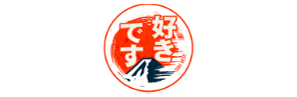

Olá, aqui é o Shoyo, e vou falar um pouco sobre os meus animes preferidos. Lembrando que este artigo é apenas a minha opinião :D
One Piece
One Piece - Riqueza, fama, poder... Um homem conquistou tudo que esse mundo pode ofercer, o lendário Rei dos Piratas, Gold Roger. Suas últimas palavras, antes de sua execução, fizeram legiões de todo o mundo se lançarem aos mares: "Meu tesouro? Se quiserem, podem pega-lo. Procurem-no! Ele contém tudo que este mundo pode oferecer!".
Homens desbravam o caminho de seus sonhos em direção à Grand Line. Assim começou a grande era dos piratas!
Pra mim, One Piece é uma obra prima que deve ser consumida por todas as pessoas do planeta terra. Como não consigo descrever o quão incrível essa obra é, veja a cena que me descreve a assência de One Piece

Hunter x Hunter
Hunter x Hunter - Monstros amedrontantes... criaturas exóticas... Riquezas vastas... Tesouros misteriosos... Terras vis... Terras inexploradas... A palavra "Desconhecido" retém magia. Magia que atrai indivíduos extraordinários. Pessoa conhecidas... como Hunters!
Hunter x Hunter é uma aventura incrível, com as lutas mais épicas que já vi, e coloco ele em segundo pelo simples fato do arco das "Chimera Ants" ser a coisa mais maravilhosa desse mundo, eu assisti tudo em três diaskkkk.

Shingeki no Kyojin
Shingeki no Kyojin - Há várias décadas atrás, a humanidade foi quase exterminada pelo súbito aparecimento de seres humanoides, conhecido como Titãs. Criaturas de tamanho enorme e de inteligência aparentemente baixa, que comiam humanos por prazer. No entanto, um pequeno grupo de seres humanos sobreviveu no interior de uma cidade protegida por paredes superiores a três vezes a altura dos maiores Titãs registrados até à data.
Shingeki foi o anime que eu mais fiquei curioso e obcecado em descobrir a verdade desse mundo, eu assisti o anime inteiro em dois dias, parando apenas pra comer. Foi uma das expêriencias mais íncriveis que eu já tive.

Full Metal Alchemist
Full Metal Alchemist - Depois de perderem sua mãe, Alphonse e Edward Elric tentam trazê-la de volta usando uma técnica de alquimia proíbida. Contudo, o princípio básico da alquimia é a ‘troca equivalente’, e tentar ressucitar alguém custa muito alto. Ed perde sua perna, e Al perde seu corpo. Ed consegue selar a alma de Al dentro de uma grande armadura metálica, dando em troca seu braço. Anos depois, Ed (com dois membros de metal) e Al (ainda preso na armadura) deixam a sua cidade natal.Ed, que possui um talento nato para a alquimia, se torna um alquimista com certificado nacional, e logo passa a ser chamado de ‘fullmetal alchemist’. Mas o verdadeiro objetivo dos irmãos é encontrar a pedra filosofal, na esperança de recuperarem os seus corpos originais. Logo eles descobrem que essa mística pedra, que pode nem existir, é visada não só por eles, mas como muitas outras pessoas também.
Pra falar a verdade, eu ainda não terminei FMA, porém, pelo que vi, tenho o dever de colocá-lo nessa lista, a história é incrível, a alquimia, o Al, eu simplesmente amo tudo desse anime.

Death Note
Death Note - O jovem estudante Light Yagami achar um caderno com poderes sobrenaturais, chamado Death Note, no qual era possível matar uma pessoa apenas escrevendo seu nome no caderno. Quando o descobre, Light tenta eliminar todos os criminosos do mundo e dar à sociedade um mundo livre do mal. Mas seus planos começam a sair de rumo quando o detetive L resolver contrariar Light.
Death Note é uma obra de arte, eu sinto como se pudesse assistir mil vezes que não perderia a graça, a narrativa é tão boa, na primeira vez que assisti, coloquei na tv da sala e virei a madrugada. Não dá pra parar!
Agradecimento
Bom, eu fiz esse site pra treinar minhas habilidades como aprendiz, então peguei o Desing de um site que pesquisei pela internet, nada mais justo que deixá-lo aqui, como agradecimento. Valeu caraaaaaa.
